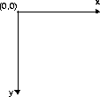

| CONTENTS | PREV | NEXT | Java 2D API |
The basic graphics rendering model has not changed with the addition of the Java 2DTM APIs. To render a graphic, you set up the graphics context and invoke a rendering method on the Graphics object.The Java 2D API class Graphics2D extends Graphics to support more graphics attributes and provide new rendering methods. Setting up a Graphics2D context is described in "Rendering with Graphics2D".
The Java 2D API automatically compensates for differences in rendering devices and provides a uniform rendering model across different types of devices. At the application level, the rendering process is the same whether the target rendering device is a d isplay or a printer.
With the JavaTM 2 SDK, version 1.3 relsease, the Java 2D API provides support for multi-screen environments. See Section 1.2.1, "Coordinate Systems" and "Rendering in a Multi-Screen Environment" for more information.
The Java 2D API maintains two coordinate systems:
- User space is a device-independent, logical coordinate system. Applications use this coordinate system exclusively; all geometries passed into Java 2D rendering routines are specified in user space.
- Device space is a device-dependent coordinate system that varies according to the target rendering device. In a multi-screen environment with a virtual desktop where a window can span more than one physical screen device, the device coordinate sy stem that's used is the coordinate system of the virtual desktop that encompasses all of the screens. For more information on how the Java 2DTM API supports multi-screen environments, see "Rendering in a Multi-Screen Environment".
The Java 2D system automatically performs the necessary conversions between user space and the device space of the target rendering device. Although the coordinate system for a monitor is very different from the coordinate system for a printer, these diff erences are invisible to applications.
As shown in Figure 1-1, the user space origin is located in the upper-left corner of the space, with x values increasing to the right and y values increasing downward.
User space represents a uniform abstraction of all possible device coordinate systems. The device space for a particular device might have the same origin and direction as user space, or it might be different. Regardless, user space coordinates are automa tically transformed into the appropriate device space when a graphic object is rendered. Often, the underlying platform device drivers are used to perform this conversion.
The Java 2D API defines three levels of configuration information that are maintained to support the conversion from user space to device space. This information is encapsulated by three classes:
Between them, the GraphicsEnvironment, GraphicsDevice, and GraphicsConfiguration represent all of the information necessary for locating a rendering device or font on the Java platform and for converting coordinates from u ser space to device space. An application can access this information, but does not need to perform any transformations between user space and device space.The GraphicsEnvironment describes the collection of rendering devices visible to a Java application on a particular platform. Rendering devices include screens, printers, and image buffers. The GraphicsEnvironment also includes a lis t of all of the available fonts on the platform.
A GraphicsDevice describes an application-visible rendering device, such as a screen or printer. Each possible configuration of the device is represented by a GraphicsConfiguration. For example, an SVGA display device can operate in several modes: 640x480x16 colors, 640x480x256 colors, and 800x600x256 colors. The SVGA screen is represented by a GraphicsDevice object and each of the modes is represented by a GraphicsConfiguration object.
A GraphicsEnvironment can contain one or more GraphicsDevices; in turn, each GraphicsDevice can have one or more GraphicsConfigurations.
The Java 2D API has a unified coordinate transformation model. All coordinate transformations, including transformations from user to device space, are represented by AffineTransform objects. AffineTransform defines the rules for man ipulating coordinates using matrices.You can add an AffineTransform to the graphics context to rotate, scale, translate, or shear a geometric shape, text, or image when it is rendered. The added transform is applied to any graphic object rendered in that context. The transform is performed when user space coordinates are converted to device space coordinates.
A string is commonly thought of in terms of the characters that comprise the string. When a string is drawn, its appearance is determined by the font that is selected. However, the shapes that the font uses to display the string don't always correspon d to individual characters. For example, in professional publishing, certain combinations of two or more characters are often replaced by a single shape called a ligature.The shapes that a font uses to represent the characters in the string are called glyphs. A font might represent a character such as a lowercase a acute using multiple glyphs, or represent certain character combinations such as the fi in final with a single glyph. In the Java 2D API, a glyph is simply a Shape that can be manipulated and rendered in the same way as any other Shape.
A font can be thought of as a collection of glyphs. A single font might have many versions, such as heavy, medium, oblique, gothic, and regular. These different versions are called faces. All of the faces in a font have a similar typogra phic design and can be recognized as members of the same family. In other words, a collection of glyphs with a particular style forms a font face, a collection of font faces forms a font family, and a collection of font families forms the set of fonts available within a particular GraphicsEnvironment.
In the Java 2D API, fonts are specified by a name that describes a particular font face--for example, Helvetica Bold. This is different from the JDK 1.1 software, in which fonts are described by logical names that map onto different font faces dep ending on which font faces are available on a particular platform. For backward compatibility, the Java 2D API supports the specification of fonts by logical name as well as by font face name.
Using the Java 2D API, you can compose and render strings that contain multiple fonts of different families, faces, sizes, and even languages. The appearance of the text is kept logically separate from the layout of the text. Font objects are u sed to describe the appearance, and the layout information is stored in TextLayout and TextAttributeSet objects. Keeping the font and layout information separate makes it easier to use the same fonts in different layout configuration s.
Images are collections of pixels organized spatially. A pixel defines the appearance of an image at a single display location. A two-dimensional array of pixels is called a raster.The pixel's appearance can be defined directly or as an index into a color table for the image.
In images that contain many colors (more than 256), the pixels usually directly represent the color, alpha, and other display characteristics for each screen location. Such images tend to be much larger than indexed-color images, but they look more realis tic.
In an indexed-color image, the colors in the image are limited to the colors specified in the color table, often resulting in fewer colors that can be used in the image. However, an index typically requires less storage space than a color value, so images stored as a set of indexed colors are usually smaller. This pixel format is popular for images that contain only 16 or 256 colors.
Images in the Java 2D API have two primary components:
The rules for interpreting the pixel are encapsulated by a ColorModel object--for example, whether the values should be interpreted as direct or indexed colors. For a pixel to be displayed, it must be paired with a color model.A band is one component of the color space for an image. For example, the Red, Green, and Blue components are the bands in an RGB image. A pixel in a direct color model image can be thought of as a collection of band values for a single screen location. < p> The java.awt.image package contains several ColorModel implementations, including those for packed and component pixel representations.
A ColorSpace object encapsulates the rules that govern how a set of numeric measurements corresponds to a particular color. The ColorSpace implementations in the java.awt.color represent the most popular color spaces, incl uding RGB and gray scale. Note that a color space is not a collection of colors--it defines the rules for how to interpret individual color values.
Separating the color space from the color model provides greater flexibility in how colors are represented and converted from one color representation to another.
With the Java 2D API, you can render Shapes using different pen styles and fill patterns. Because text is ultimately represented by a set of glyphs, text strings can also be stroked and filled.Pen styles are defined by objects that implement the Stroke interface. Strokes enable you to specify different widths and dashing patterns for lines and curves.
Fill patterns are defined by objects that implement the Paint interface. The Color class, which was available in earlier versions of the AWT, is a simple type of Paint object used to define solid-color fills. The Java 2D A PI provides two additional Paint implementations, TexturePaint and GradientPaint. TexturePaint defines a fill pattern using a simple image fragment that is repeated uniformly. GradientPaint defines a fill pattern as a gradient between two colors.
In Java 2D, rendering a shape's outline and filling the shape with a pattern are two separate operations:
When a text string is rendered, the current Paint attribute is applied to the glyphs that form the string. Note, however, that drawString actually fills the glyphs that are rendered. To stroke the outlines of the glyphs in a text str ing, you need to get the outlines and render them as shapes using the draw method.
When you render an object that overlaps an existing object, you need to determine how to combine the colors of the new object with the colors that already occupy the area where you are going to draw. The Java 2D API encapsulates rules for how to combine c olors in a Composite object.Primitive rendering systems provide only basic Boolean operators for combining colors. For example, a Boolean compositing rule might allow the source and destination color values to be ANDed, ORed, or XORed. There are several problems with this approach
- It's not "human friendly"--it's difficult to think in terms of what the resulting color will be if red and blue are ANDed, not added.
- Boolean composition does not support the accurate composition of colors in different color spaces.
- Straight Boolean composition doesn't take into account the color models of the colors. For example, in an indexed color model, the result of a Boolean operation on two pixel values in an image is the composite of two indices, not two colors.
The Java 2D API avoids these pitfalls by implementing alpha-blending1 rules that take color model information into account when compositing colors. An AlphaComposite object includes the color model of both the source and destination colors.